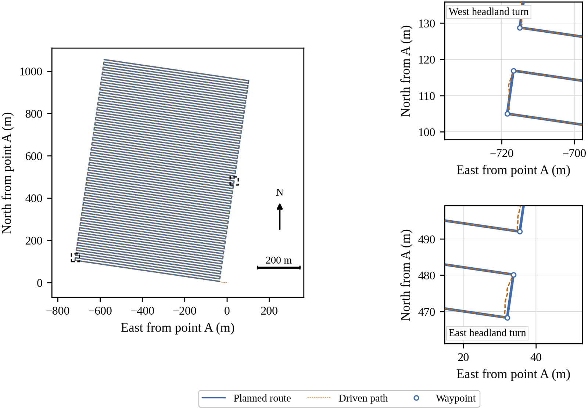
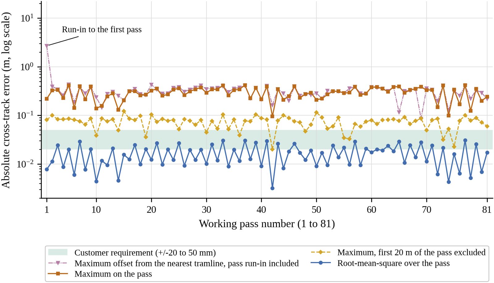
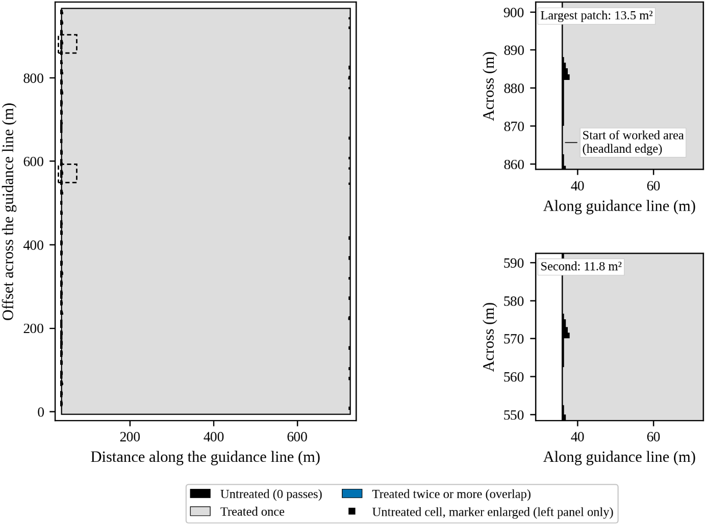
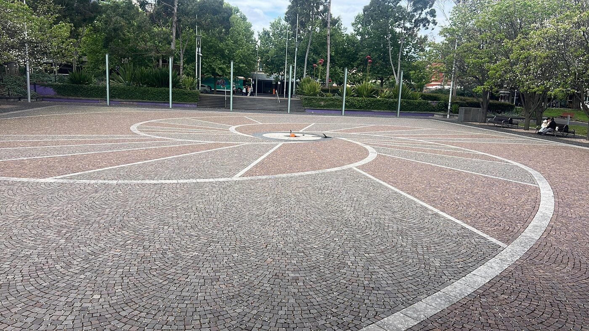
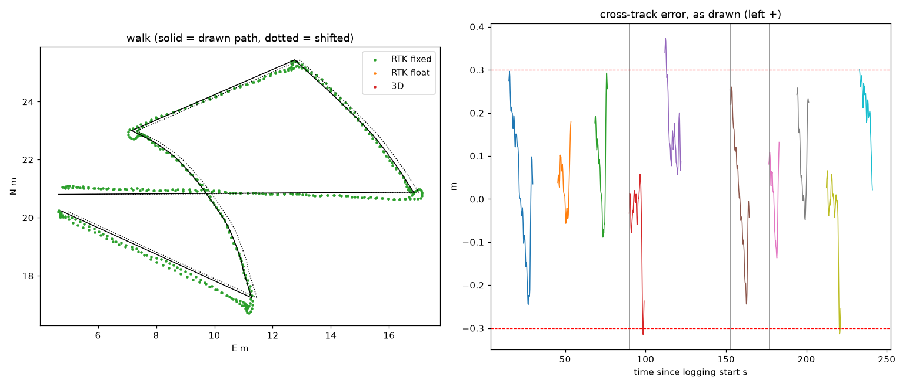
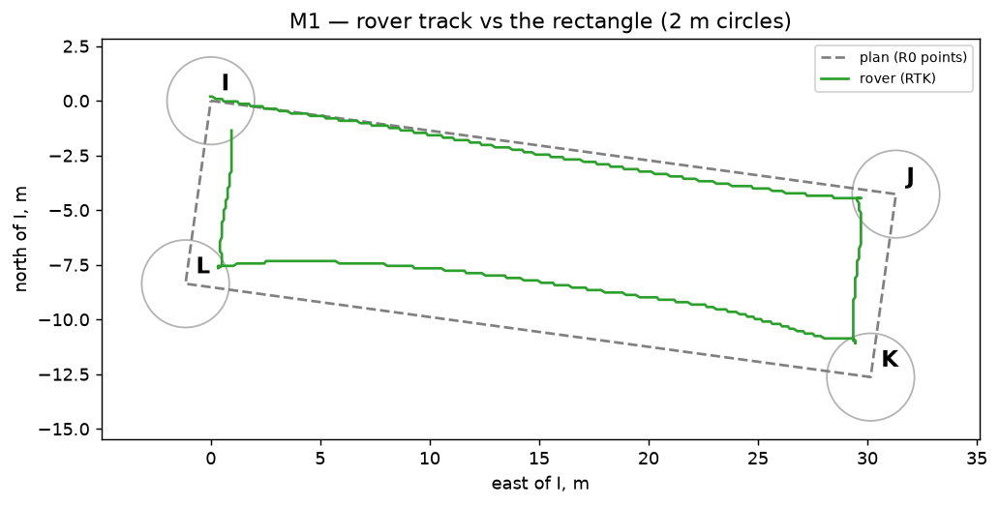
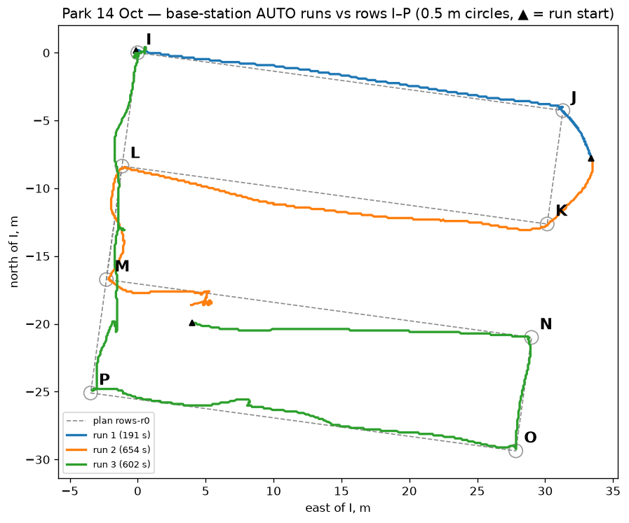
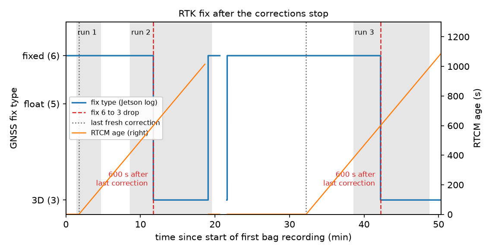
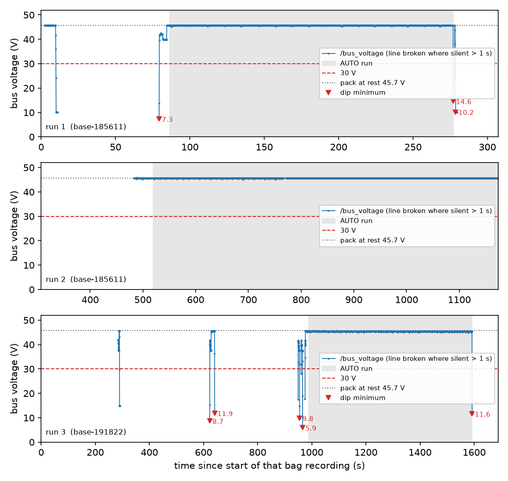

Results
What we measured, and how far to trust it
The simulation shows what the navigation software can do with ideal inputs. The field test shows what Prototype 2 did on 14 October with a simpler controller. The two aren't the same test, so this page keeps them apart.
Simulation Sim
A real paddock, an idealised rover
NVIDIA Isaac Sim 5.1.0 ran the full ROS 2 Jazzy navigation graph in real time on an 8 GB RTX 3060 Ti, with the main loop held at 60 Hz so simulated time matched wall-clock time.
| Element | In the simulation | Effect |
|---|---|---|
| Software | Nav2, robot_localization and the mission sequencer | Faithful |
| Route | The grower's John Deere AB line; 81 passes, 12 m apart, 36 m headlands | Faithful |
| GNSS | Noise-free at 10 Hz by default; noise relays for RTK and standard grade | Best case |
| Heading | True attitude, no speed-dependent error | Can't test low-speed heading |
| Vehicle | 0.4 × 0.3 m, 20 kg, two driven wheels and two casters | Not Prototype 2 |
| Terrain | Flat collision plane | No slope, roll or ruts |
| Implement | A 12 m geometric swath | No draft load or offset |
Prototype 2's CAD couldn't be exported as a working robot: its mates formed 32 disconnected rigid groups, so the exporter produced one link with no wheel joints. Where Prototype 2 appears in a render, it's a visual shell on the smaller physics body.
Every configuration got one attempt, identified by its repository commit, with no intervention and no tuning between attempts. Trajectories were committed unedited and analysed offline by Python tools with 15 unit tests. An ideal pass layout run through the same pipeline returns exactly 100% coverage, zero overlap and zero missed area.
An earlier wheel-radius error made the simulated rover travel about 1.2 times its labelled speed. Every run was checked for it, and an affected GNSS-dropout study was withdrawn and repeated.
Reaching every waypoint wasn't enough
The first configuration sent the 162 waypoints one by one to Nav2's default controller. On a 17-pass test it reached all 34 waypoints and still only covered 74.8% of the target area: 25.2% was missed and 26.8% treated twice. Between waypoints it wandered 17–21 m on average on east-bound legs, and 33 m at worst.
Two changes fixed it. The mission sequencer now hands Nav2 a continuous path with a pose every 0.7 m, and Regulated Pure Pursuit replaced the Dynamic Window Approach controller. On the same route the worst cross-track error fell from 36.3 m to 0.336 m.
Show the numbers as a table
| Cross-track statistic | RPP | DWA | DWA, alt. tuning |
|---|---|---|---|
| Median | < 0.5 mm | 7.490 m | 9.558 m |
| 95th percentile | 0.001 m | 27.967 m | 27.643 m |
| Maximum | 0.336 m | 36.336 m | 34.359 m |
The full paddock, in one attempt


Where the error sits
Most of it is at pass entry. West-bound passes started a median 0.268 m left of the line, 40 of 41 on the same side, which is inside the 0.5 m arrival tolerance the sequencer accepts at the headland. In both directions error fell below 10 mm after about 23 m. The recorded data don't identify the cause; the headland manoeuvre and the heading check are the likely places to look.
The same offset shows up in coverage. Of the 1,251 untreated cells, 90.6% lie within 5 m of a pass start and 69.1% belong to west-bound passes.
Heading, estimated from course over ground at 5 Hz, was 0.98° RMS, or 0.58° after pass entry. The published sub-0.15° figure comes from a full-size tractor measured differently, so it's a reference only.

Neighbouring passes, and what GNSS quality does to them
The customer requirement is about neighbouring passes, so this is the closest test of it. Spacing error against the nominal 12.000 m, sampled every metre with the first 20 m and last 5 m of each pass excluded.
| Run | Pass pairs | Stations | RMS | Max | Within ±20 mm | Within ±50 mm | Coverage |
|---|---|---|---|---|---|---|---|
| Full route, 2.0 m/s | 80 | 51,944 | 5.7 mm | 122.4 mm | 99.26% | 99.59% | 99.9534% |
| Noise-free, 17 passes | 16 | 10,394 | 0.6 mm | 1.8 mm | 100.00% | 100.00% | 99.9275% |
| RTK-grade noise, 17 passes | 16 | 10,390 | 15.8 mm | 57.8 mm | 79.56% | 99.88% | 99.9147% |
| Standard-grade noise, 17 passes | 16 | 10,398 | 1,848 mm | 7,943 mm | 0.75% | 2.05% | 97.3560% |
Measured as RMS, or as the share of stations within tolerance, the simulated stack met the tighter ±20 mm bound with ideal GNSS. Measured by its single worst point, it didn't meet 50 mm. The site visit didn't say which reading Knuckey means, so that needs confirming before it becomes an acceptance test.
With standard-grade GNSS, modelled on Prototype 1's u-blox receiver, the rover never settled into a steady cruise, kept stopping and restarting, and took 7.3 h against 2.9 h with RTK-grade noise. 13.38% of the area was treated twice, which for a seeder means wasted seed. The result backs RTK as the position source.
All three receiver-grade runs predate the wheel-radius fix and ran at about 1.18 m/s against a 1.0 m/s setting. The noise-free and RTK runs ran at the same speed, so they compare like for like, but the study shows sensitivity to receiver quality rather than a controlled estimate of it. Each condition ran once. Headland turning accuracy couldn't be measured, because the planned headland paths weren't logged.
Field test Field
Argyle Square, Carlton, 13 and 14 October
Flat, open to the sky, and paved with painted lines and a central disc that show up in aerial imagery. Four tests, each involving more of the system than the one before.

| Test | Platform | Speed | Arrival radius |
|---|---|---|---|
| Reference point R0 | Capture box, static | — | — |
| Walking test | Capture box, hand-carried | Walking pace | — |
| Chocks check | Prototype 2, wheels raised | 0.45 m/s commanded | — |
| Rectangle | Prototype 2, laptop on a cable | ≤ 0.25 m/s | 2 m |
| Base-station rows | Prototype 2 over the radio | ≤ 0.25 m/s | 0.5 m |
| Obstacle stop | Prototype 2 | — | — |
Corrections over NTRIP from AUSCORS station EML200AUS0, about 1.4 km away. The rover's route executor steered straight from the GNSS fix, not from the fused estimate. Distances are measured from logged GNSS against the planned points; nobody surveyed the rover independently.
Reference point
The capture box sat with its master antenna over the disc's centre dot for 10 minutes, held RTK fix the whole time, and spread 3.8 mm east, 3.7 mm north and 6.7 mm vertical (1σ). A second base station, PKVL00AUS0, agreed to within 3.6 mm horizontally. That's the receiver's static precision, not the accuracy of a moving vehicle.
Walking test
Carried twice round a 39 m loop traced on the aerial image: cross-track RMSE 0.166 m on the straights and 0.099 m on the arcs, but the two laps agreed to 0.057 m RMS. Shifting the traced loop by the R0 offset made the fit worse, so most of the absolute error came from the tracing and the walker.
Rectangle
A 31.6 × 8.5 m rectangle, closed in 334 s on RTK throughout. With a 2 m arrival radius the rover turned 1.61–1.70 m early at every corner and started each later leg inside the line. On the first attempt it turned away from J and spun round: the planner and /cmd_vel disagreed on the sign of yaw rate.


Base-station rows: the rover drives itself
The operator loaded an eight-point plan, I to P, on the base station and sent ARM, GO and AUTO from its touchscreen. Prototype 2 drove itself over the radio link with a 0.5 m arrival radius. Faults ended the first two runs, so reaching all eight points took three runs of 191 s, 654 s and 602 s.
It reached six points on RTK and passed within 0.08–0.19 m of each. It reached M and P on a standard 3D fix, accurate only to metres, so no distance is given for those. On most legs the mean signed error was close to the RMSE: a steady offset to one side, not a weave.

Straight-section error by leg
Cross-track RMSE on RTK-fixed samples, log scale. Every leg sits above the customer band, the receiver's hand-carried walk included.
Show the numbers as a table
| Leg | RMSE |
|---|---|
| Walk legs 1, 3, 5 | 0.151, 0.139, 0.203 m |
| Rectangle I→J, J→K, K→L, L→I | 0.407, 1.26, 2.02, 1.32 m |
| Run 1 I→J, J→K | 0.296, 1.68 m |
| Run 2 J→K, K→L, L→M* | 2.07, 0.895, 0.396 m |
| Run 3 N→O, O→P* | 0.119, 0.237 m |
| M→N, P→I | no RTK-fixed samples |
Things the simulation never showed us
Lost corrections. The laptop cable carrying RTK corrections came out twice. Both times the receiver held its fixed solution on ageing corrections for 600 s, then dropped straight to a 3D fix of 1.6–2.1 m with no float stage in between. Both drops happened in AUTO, and the rover kept driving on the degraded fix. Fix type and correction age need to become safety inputs.
A heading reset. After the motor bus collapsed at the end of run 1, the heading estimate fell back to the magnetometer and read about 107° with the rover facing east. Commanded east, it drove roughly 175°. Switching on the receiver's dual-antenna heading fixed it without a reboot.
A slow first fix. At the rover's first position the receiver sat in RTK float for over 10 minutes, and fixed about 10 s after the rover moved 8 m to a more open spot.
Vibration wasn't measured: raw IMU data wasn't logged in the field.

Safety
Every stop we tried removed motion
The targets come from the team's Completion Plan. They're our own working criteria, not published benchmarks.
| Measurement | Result | Conditions | Source |
|---|---|---|---|
| Physical E-stop to main bus below 1 V | about 100 ms | Bench. Target was 0 A motor current in 100 ms; current wasn't measured. | Rover |
| Stopping distance | 0.5 m | About 1 m/s; stop path not recorded. Target 1 m. | Rover |
| Stop key to motor contactor open | 0.8 s | Wheels raised on chocks, one trial | Field |
| Arming time | 6.9 s | Wheels raised, two trials | Field |
| Obstacle stop | 500 mm | 1 m object, one trial, no timestamps | Field |
| Internal faults in AUTO caught and latched | 2 of 2 | Motor bus collapse; stale voltage telemetry | Field |
| Link-loss software stop after 0.5 s | Passed | Dry run with injected packets; not tested on the moving rover | Bench |
During run 1 the motor bus collapsed from 45.7 V to 14.6 V while the battery still read 45.7 V. The bus-voltage monitor caught it and latched the E-stop. The same collapse happened twice more during pre-charge. Run 2 ended when bus-voltage telemetry went silent for 1.01 s, which the monitor also treated as a fault. Run 3 ended when the operator stopped it at I.
We haven't found the cause of the collapse. With no electrical feedback from the pre-charge and contactor hardware, the software sees the effect but not the cause.
The obstacle detector held the rover 10 times across the three runs. Nobody recorded what triggered each hold, so we can't say how many were real.

The 0.5 s link timeout adds 0.5 m of travel at 1 m/s before braking starts. With the measured 0.5 m stop, that's about 1.0 m in total: on the 1 m target, with no margin. At the 1.67 m/s design speed the timeout alone adds 0.84 m. Until it's validated against stopping performance, the operating speed should stay low.
Assessment
The receiver is ready. The control loop isn't, yet.
The positioning layer is capable. Its static precision and lap-to-lap repeatability are at the scale of the ±20–50 mm requirement. The simulated navigation software also meets the requirement on RMS with RTK-grade input.
Closed-loop tracking on Prototype 2 falls short by a factor of 5 to 18, and the error is a steady offset. That points at the control loop and its inputs: heading, steering, and a 2 Hz, 0.1 m position feed. It doesn't point at the receiver.
The safety monitoring caught both internal faults it was built for. The missing piece is a response to degraded positioning.
These results come from single runs on paving at 0.25 m/s. They show feasibility at prototype scale, not field performance.
| Question | Status |
|---|---|
| RQ1 Accuracy | Simulation yes; rover not yet |
| RQ2 Coverage | Simulation only |
| RQ3 Robustness | Correction loss seen; no response |
| RQ4 Safe stop | Fast where tested; reliability open |
See the Project page for each question in full.